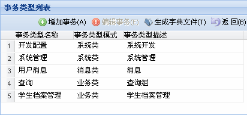
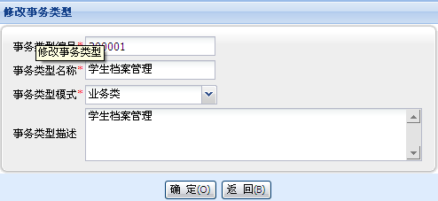
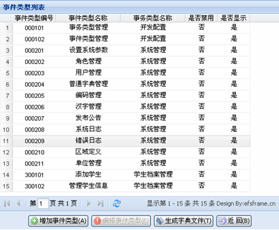
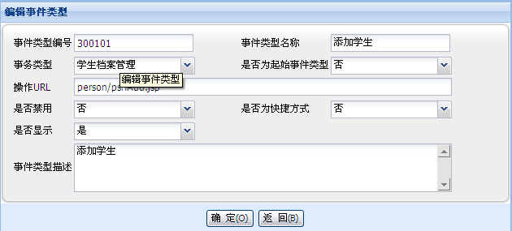

事务、事件类型管理
事务类型：是指我们业务开发过程中，对某一些事件的分组名称，也可以叫业务组名称，如：学生档案管理、订单管理等；
事件类型：是指我们业务开发过程中，具体的某一个操作的事件名称，如：学生档案管理里面的添加学生、修改学生、删除学生、查询学生档案等，或者如订单管理中的添加订单、修改订单、审核订单、删除订单、订单查询等；
事件类型是包含在事务类型下面的子信息，事务类型是对事件类型的分组管理，EfsFrame框架中所有的事件类型在添加的过程中，会要求指定对应的url地址，即该业务操作的具体业务实现页面的地址，这样，我们在不同角色用户登录系统后，根据其事件类型权限，就能实现二级的功能树菜单，如下图：



